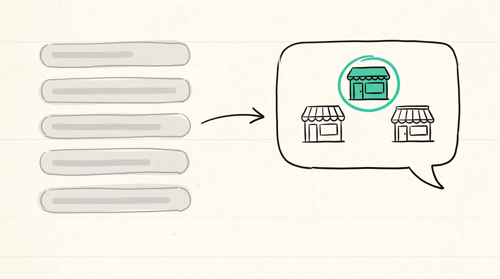

⚡ 30 秒快速答案
SEO 让你在 Google 被搜到，GEO 让你在 AI 的答案里被引用——这是两场不同的仗：
2026 年，越来越多人问 AI 而不是翻 Google——所以两个都要。好消息是：对小生意来说，这不是要你另外买一个月费服务。建站时把几件事做对（答案先行、结构化数据、内容别塞进图片里），AI 就搜得到你——这些我每个网站都当标配内建了。
上个月一个客户问我一句我最近越听越多的话：「我 SEO 都做了啊——为什么还是这么静？」隔一个礼拜，另一个客户问的却是反过来的：「现在大家不都直接问 ChatGPT 了吗，Google 还重要吗？」这两个问题，其实指向同一件正在发生的事。所以让我用最白的话，讲清楚到底变了什么——以及你该做的是什么。
SEO 帮你赢一个点击。GEO 帮你赢那个答案。而 2026 年，你很多客户在「答案」那一步就停下了，根本没有点进来那一步。
01SEO 和 GEO，到底差在哪？
先给你一句话版本：SEO，是让你在 Google 那一列蓝色链接里排得靠前。GEO——生成式引擎优化——是让 AI 在它写出来的那段答案里，直接点你的名字。一个争的是「榜上的位置」，一个争的是「成为那个答案」。
想象一个真实的客户。以前，一个人要找「Puchong 冷气维修」，会 Google 一下、扫几个链接、点进去两三个看看。现在，越来越多人直接开 ChatGPT，或者看 Google 最顶那个 AI 框，打一句「Puchong 有没有靠谱的冷气维修？」AI 就回你一段整理好的答案，里面带着几个名字。如果你不是那几个名字之一，你连「被点进去」的机会都没有。这，就是变化。
02为什么 2026 年，只做 SEO 已经不够了？
短答案：因为你的客户「找东西」的方式变了。Google 现在会在结果最上面放一个 AI Overview；ChatGPT 和 Perplexity 能直接联网回答。越来越多人看完那段答案就停下——根本不会往下滑到那些蓝色链接。这件事甚至有个名字：zero-click（零点击）搜索。
- 那段「答案」，成了新的首页。如果 AI 的答案里没有你，那你在旧的链接列表里排得多好都没用——因为那个列表，越来越少人翻到了。
- 同行被点名了，你没有。当 AI 回答「KL 最好的 X」时给出三个店名，被漏掉是一种安静、看不见的流失。你永远不会知道那个客户问了、拿到另外三个名字、然后去联络了其中一个。
- 但 SEO 没有死。GEO 是 SEO 的延伸，不是取代。地基是同一个——一个能被爬、结构清楚的网站。只是终点线上多了一根柱子：不只是「排名」，还要「被引用」。

03那 GEO 具体要做对哪几件事？（用人话讲）
说到底就一句话：让 AI 容易读懂你、容易信任你、容易直接引用你。落到一个真实的网站上，就是这五件事：
- 答案先行。每一页开头就摆一段直接、干脆、AI 一眼就能「抄走」的答案——就像这篇最上面那个「30 秒快速答案」框。
- 结构化数据 + 一个有名有姓的真人作者。在幕后，用机器读得懂的格式告诉 AI：这是谁写的、这家店卖什么、价格多少、在哪里。一个有名有姓的真人（不是冷冰冰的品牌），AI 更愿意信。
- 具体、可引用的事实。把具体的写清楚——RM 590、2026、Puchong／马来西亚。AI 引用的是具体的数字和地名，不是「价格实惠」这种空话。
- 内容别塞进图片里。如果你的价格、服务、优势只做在一张海报图上，AI 读不到——它读的是文字。一张再漂亮的价目表图片，AI 是真的看不见。
- 让 AI 爬得进来。你的 robots.txt 别把 AI 爬虫挡在门外，还要有 sitemap，和一个 llms.txt——你可以把它想成一张「专门画给 AI 看的地图」。
如果这张清单看起来有点多——其实一点都不多，只要它从一开始就是「建站的一部分」。这些，正是我建每一个网站时会内建的东西。不是一个额外开单的「SEO 套餐」——就是地基该有的样子。
好奇你现在的网站 AI 到底搜不搜得到？在 WhatsApp 把你的网站链接丢给我——我老实告诉你 ChatGPT／Perplexity 读不读得懂它、缺了什么。免费、不讲术语、不硬推销。
💬 WhatsApp 我们 →04那我需要额外请人做「持续 SEO」、每月交钱吗？
对大多数小生意，老实的答案是：不用。让我公平地说清楚，什么时候它有意义，什么时候没有：
- 「SEO 月费服务」是存在的——对大公司来说也合理。如果你是一间要在竞争超激烈的关键词上死守第一名的大公司，每个月付钱持续产内容、做外链，那是真实的策略。
- 但一间只想被本地客户找到的小生意，不需要每月交租。你需要的是「地基一次打对」。答案先行的页面、结构化数据、真人作者、可爬取的内容、一个 llms.txt——建站时做对了，它们会一直发挥作用，不用每个月再开一张单。
我就是这样做的：基础 SEO + GEO 在我建站时就内建进去——一次性的事，跟着网站一起交给你，没有强制月费（只有域名和主机按实际成本另算，一年一笔很小的钱）。等到哪天你真的「长大」到这一步——要在最激烈的关键词上跟巨头缠斗、需要每周产内容——那是后面的章节了，不是一间小生意现在该先烦的事。
053 个自测：AI 到底搜不搜得到你的网站？
这个不用任何工具——只要五分钟和你的手机：
- 用你客户会用的话去问 AI。打开 ChatGPT（开搜索）或 Perplexity，打一句真实客户会问的问题——「Puchong 有没有推荐的冷气维修？」或「马来西亚小生意做个网站要多少钱？」答案里有你的名字吗？有你同行的吗？
- 看你最重要的信息「住」在哪。你最重要的几件事——价格、服务、地点——是打成文字的，还是全塞在一张海报图里？如果全在图片里，AI 一个字都读不到。
- 看你网站的第一屏。有没有一段一眼就能被抄走的直接答案——还是我要读三段，才知道你到底在卖什么？
如果这三题里有两题卡住你，那你缺的多半不是更多广告预算——是一个 GEO 地基做对的网站。而且「被搜到」只是第一步：搜进来之后怎么接住、怎么连成一个会自己回流的闭环，我在《网站做好了没人来》那一篇另外写过。
把整件事变成一句话
这篇从来不是要你追最新的流行词。它讲的是一个简单、不花俏的事实：你的客户开始问 AI，而不是 Google 了——所以你的网站，得是一个 AI 读得懂、信得过、引用得了的网站。